Public health is an important driving force behind biological and medical research. A major challenge of the post-genomic era is bridging the gap between fundamental biological research and its clinical applications. Recent research has increasingly demonstrated that many seemingly dissimilar diseases have common molecular mechanisms. Understanding similarities among disease aids in early diagnosis and new drug development.
Formal knowledge representation of gene-disease association is demanded for this purpose. Ontologies, such as Gene Ontology (GO), have been successfully applied to represent biological knowledge, and many related techniques have been adopted to extract information. Disease Ontology (DO) (Schriml et al. 2011) was developed to create a consistent description of gene products with disease perspectives, and is essential for supporting functional genomics in disease context. Accurate disease descriptions can discover new relationships between genes and disease, and new functions for previous uncharacteried genes and alleles.
Disease Ontology (DO) (Schriml et al. 2011) aims to provide an open source ontology for the integration of biomedical data that is associated with human disease. Unlike other clinical vocabularies that defined disease related concepts disparately, DO is organized as a directed acyclic graph, laying the foundation for quantitative computation of disease knowledge.
We developed an R package DOSE(Yu et al. 2015) for analyzing semantic similarities among DO terms and gene products annotated with DO terms.
2.1 DO term semantic similarity measurement
Four methods determine the semantic similarity of two terms based on the Information Content of their common ancestor term were proposed by Resnik (Philip 1999), Jiang (Jiang and Conrath 1997), Lin (Lin 1998) and Schlicker (Schlicker et al. 2006). Wang (Wang et al. 2007) presented a method to measure the similarity based on the graph structure. Each of these methods has its own advantage and weakness. DOSE supports all these methods to compute semantic similarity among DO terms and gene products. For algorithm details, please refer to chapter 1.
In DOSE, we implemented doSim for calculating semantic similarity between two DO terms and two set of DO terms.
The doSim function requires three parameter DOID1, DOID2 and measure. DOID1 and DOID2 should be a vector of DO terms, while measure should be one of Resnik, Jiang, Lin, Rel, and Wang.
We also implement a plot function simplot() to visualize the similarity result as demonstrated in Figure 2.1.

Figure 2.1: Similarity matrix visualization. The simplot() function visualize similarity matrix as a heatmap.
Parameter color.low and colow.high are used to setting the color gradient; labs is a logical parameter indicating whether to show the similarity values or not, digits to indicate the number of decimal places to be used and labs.size control the font size of similarity values; font.size setting the font size of axis and label of the coordinate system.
2.2 Gene semantic similarity measurement
On the basis of semantic similarity between DO terms, DOSE can also compute semantic similarity among gene products. DOSE provides four methods which called max, avg, rcmax and BMA to combine semantic similarity scores of multiple DO terms (as described in session 1.3). The similarities among genes and gene clusters which annotated by multiple DO terms were also calculated by these combine methods.
DOSE implemented geneSim to measure semantic similarities among genes.
84289 6045 56999 9869
84842 0.000 0.0 0.049 0.216
2524 0.000 0.0 0.227 0.000
10590 NA NA NA NA
3070 0.377 0.2 0.000 0.344
91746 NA NA NA NA
The geneSim requires four parameter geneID1, geneID2, measure and combine. geneID1 and geneID2 should be a vector of entrez gene IDs; measure should be one of Resnik, Jiang, Lin, Rel, and Wang, while combine should be one of max, avg, rcmax and BMA.
2.3 Gene cluster semantic similarity measurement
DOSE also implemented clusterSim for calculating semantic similarity between two gene clusters and mclusterSim for calculating semantic similarities among multiple gene clusters.
a b c
a 1.000 0.338 0.157
b 0.338 1.000 0.034
c 0.157 0.034 1.000
References
Jiang, Jay J., and David W. Conrath. 1997. “Semantic Similarity Based on Corpus Statistics and Lexical Taxonomy.”Proceedings of 10th International Conference on Research In Computational Linguistics. http://www.citebase.org/abstract?id=oai:arXiv.org:cmp-lg/9709008.
Lin, Dekang. 1998. “An Information-Theoretic Definition of Similarity.”In Proceedings of the 15th International Conference on Machine Learning, 296—304. https://doi.org/10.1.1.55.1832.
Schlicker, Andreas, Francisco S Domingues, Jörg Rahnenführer, and Thomas Lengauer. 2006. “A New Measure for Functional Similarity of Gene Products Based on Gene Ontology.”BMC Bioinformatics 7: 302. https://doi.org/1471-2105-7-302.
Schriml, L. M., C. Arze, S. Nadendla, Y.-W. W. Chang, M. Mazaitis, V. Felix, G. Feng, and W. A. Kibbe. 2011. “Disease Ontology: A Backbone for Disease Semantic Integration.”Nucleic Acids Research 40 (D1): D940–46. https://doi.org/10.1093/nar/gkr972.
Wang, James Z, Zhidian Du, Rapeeporn Payattakool, Philip S Yu, and Chin-Fu Chen. 2007. “A New Method to Measure the Semantic Similarity of GO Terms.”Bioinformatics (Oxford, England) 23 (May): 1274–81. https://doi.org/btm087.
Yu, Guangchuang, Li-Gen Wang, Guang-Rong Yan, and Qing-Yu He. 2015. “DOSE: An r/Bioconductor Package for Disease Ontology Semantic and Enrichment Analysis.”Bioinformatics 31 (4): 608–9. https://doi.org/10.1093/bioinformatics/btu684.